AGENT

Overview
AGENT is a fictional AI brand. As a personal project, I set out to brand an AI campaign using only type and shape elements.
Design objective
I wanted the type to carry the feeling of elevation. Sharp edges, triangles, and hard angles express how AI scales, and the logotype extends into renderings and posters with one cohesive art direction.
Concept
Each letter is built from a small set of parts: straight stems, quarter-round terminals, and a hairline split that runs through the letterform. The split gives the face its signature, reading as two halves meeting.
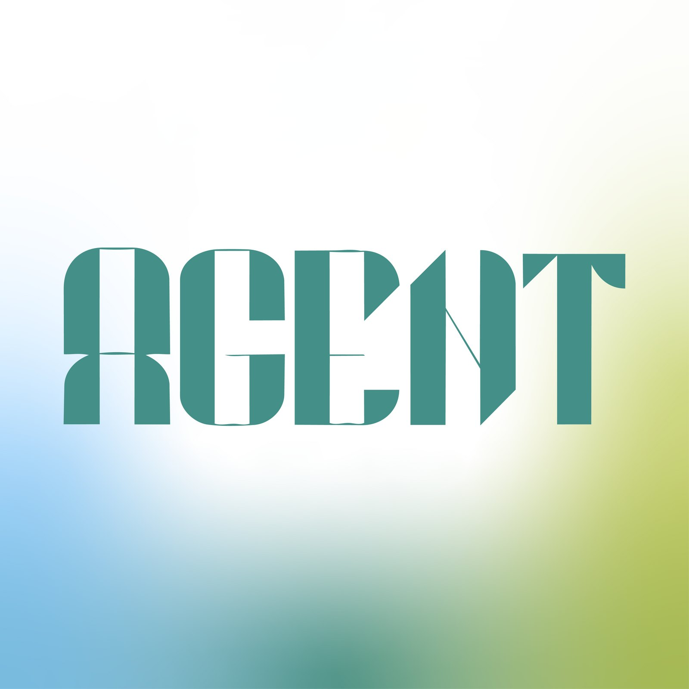
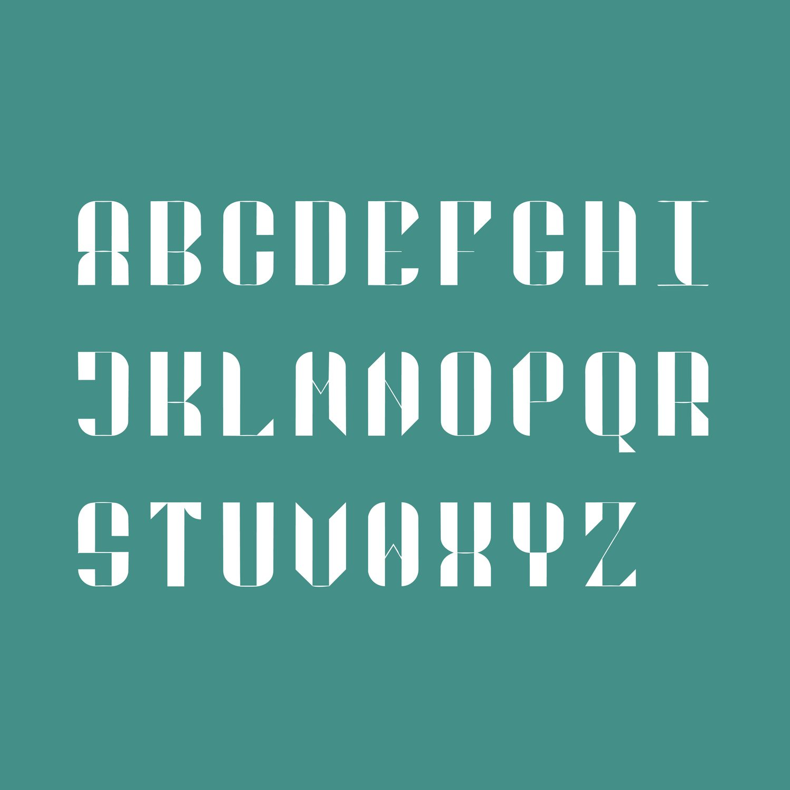
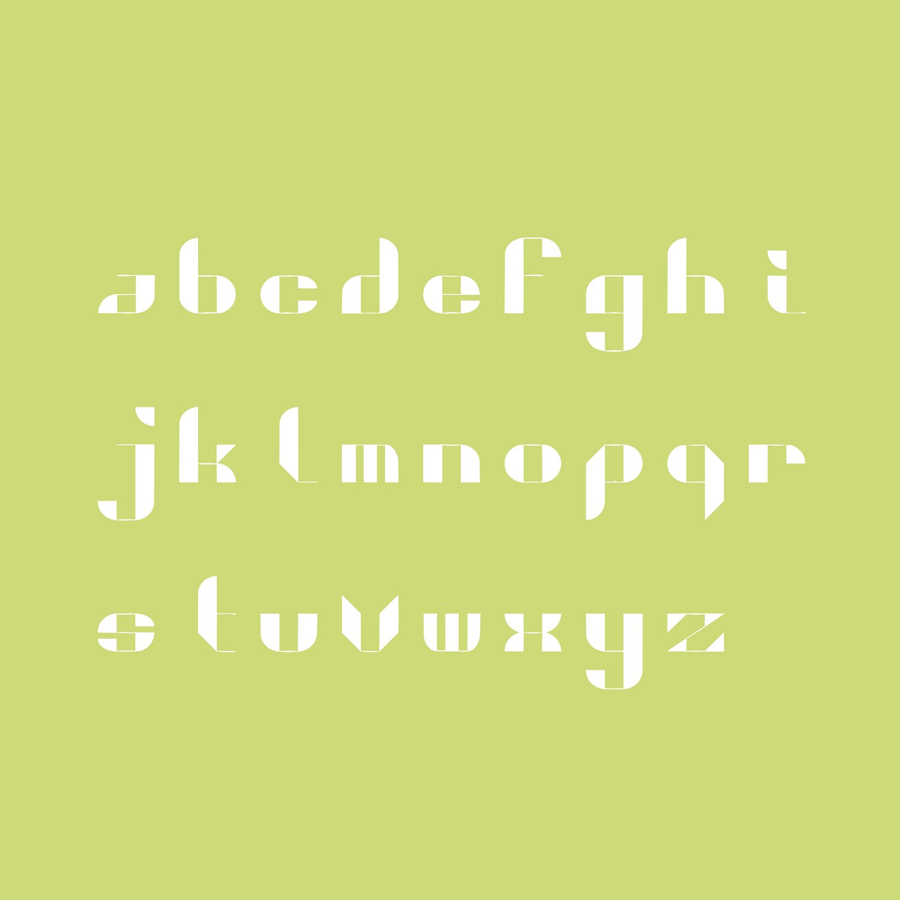
Exploration
I explored patterns and motion-blurred images as brand assets: the moving triangles show how fast the AI industry moves. The biggest lesson was how to assemble an identity by extending typographic and shape elements.
Design decisions
- One construction system across both cases, so the lowercase feels like the same voice at a smaller scale.
- Glyphs double as graphic elements: the repeated quarter-round forms become the pattern, and the A becomes the app icon.
- A soft blue-to-lime field balances the rigid, geometric letterforms.
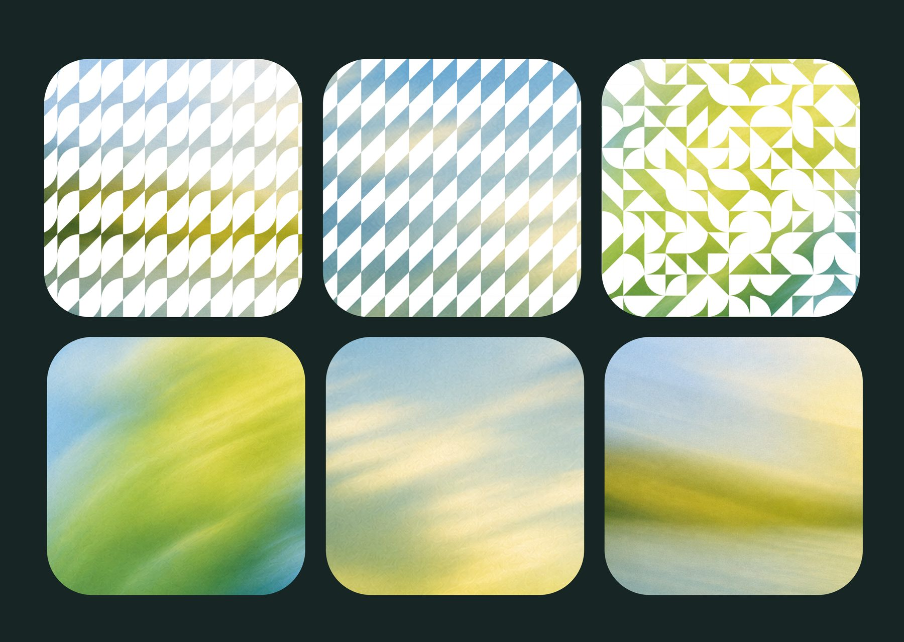
Applications
The type and pattern carry from a phone-sized icon to building-scale signage. Shown here in application mockups.
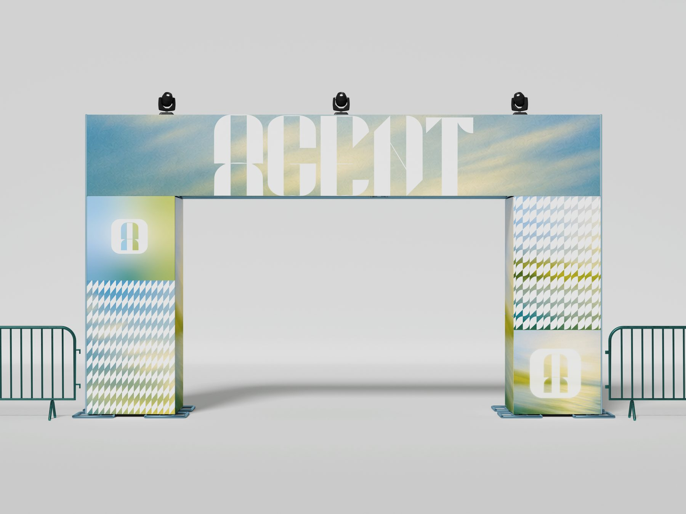
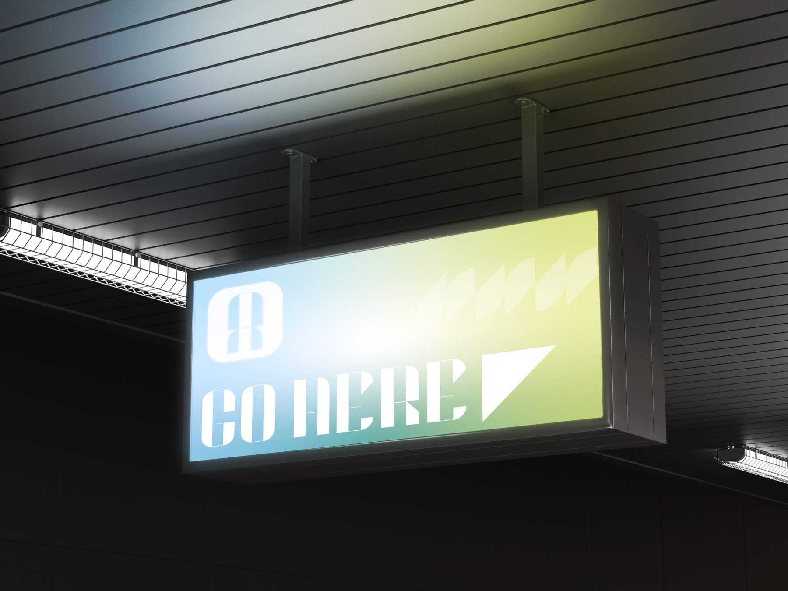
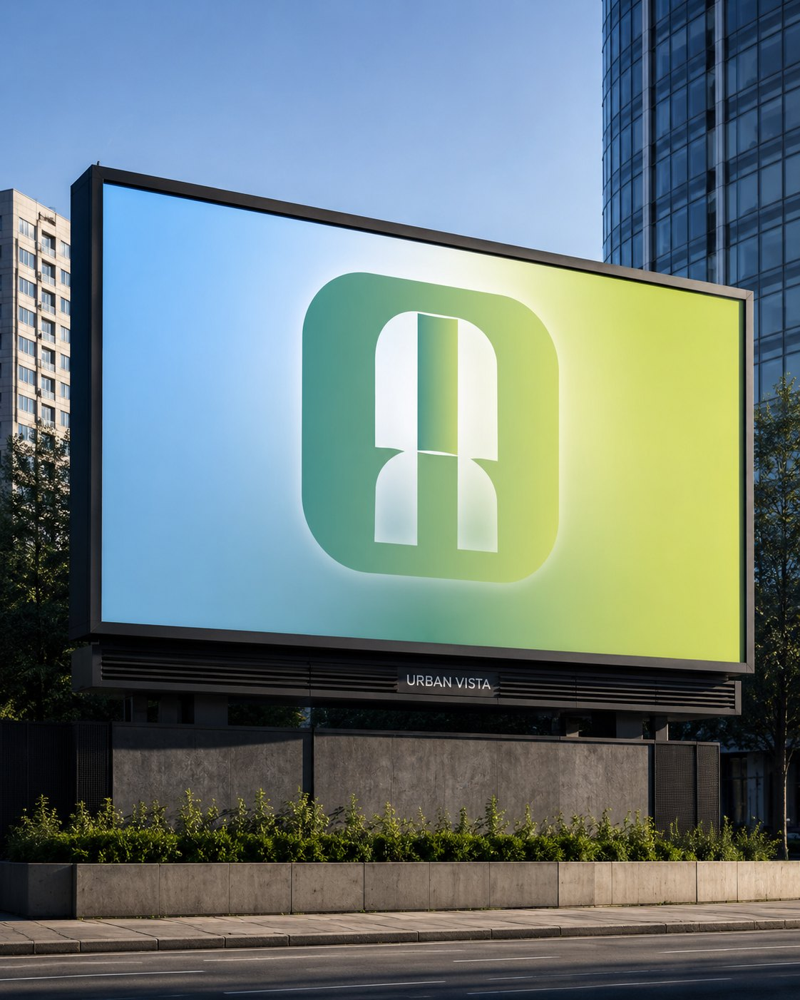
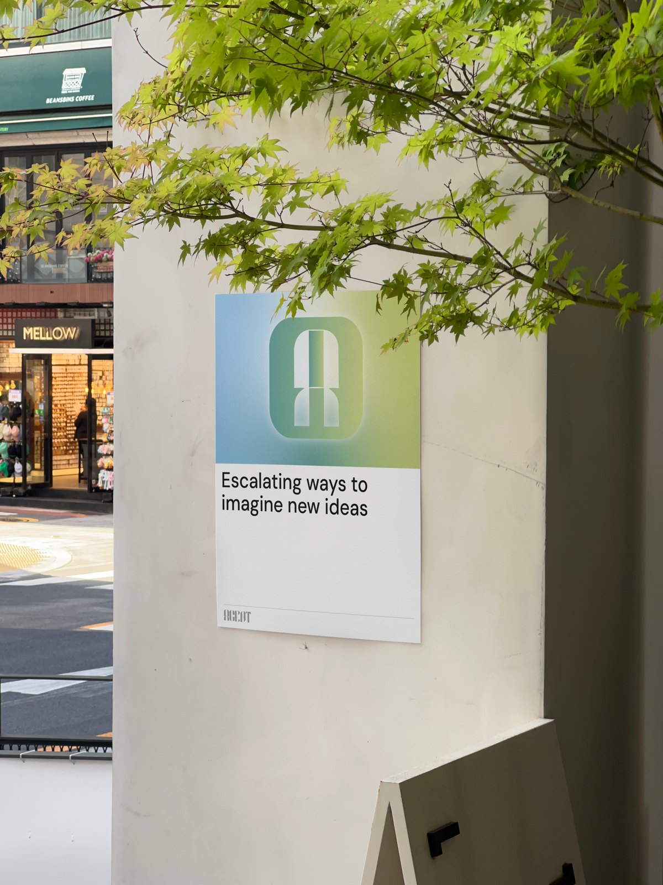
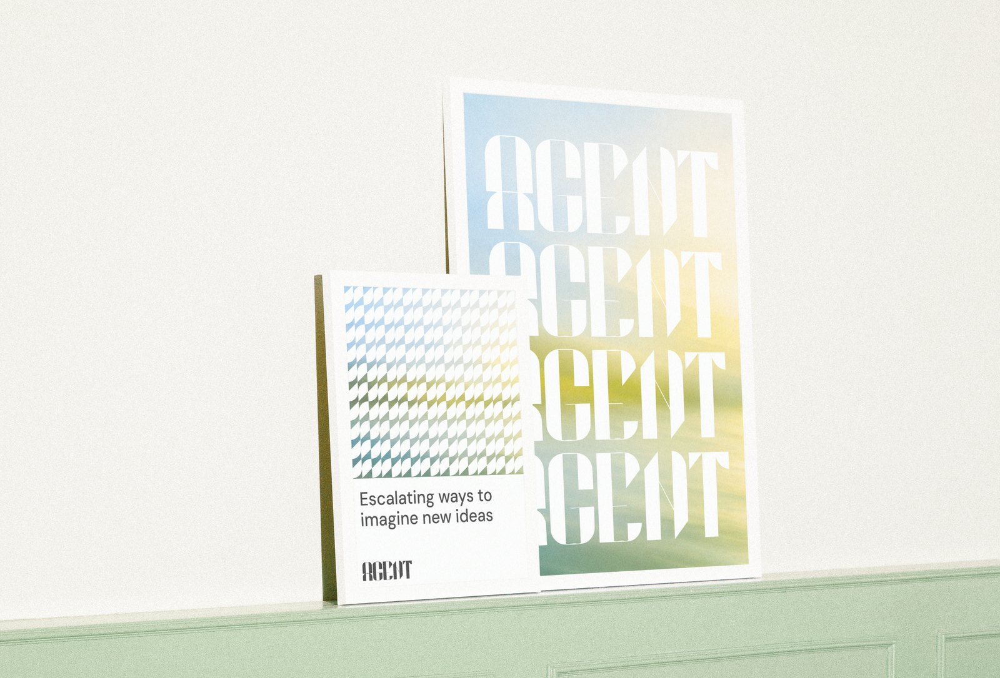
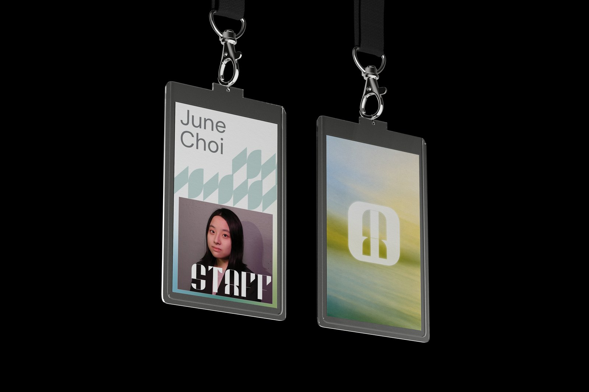
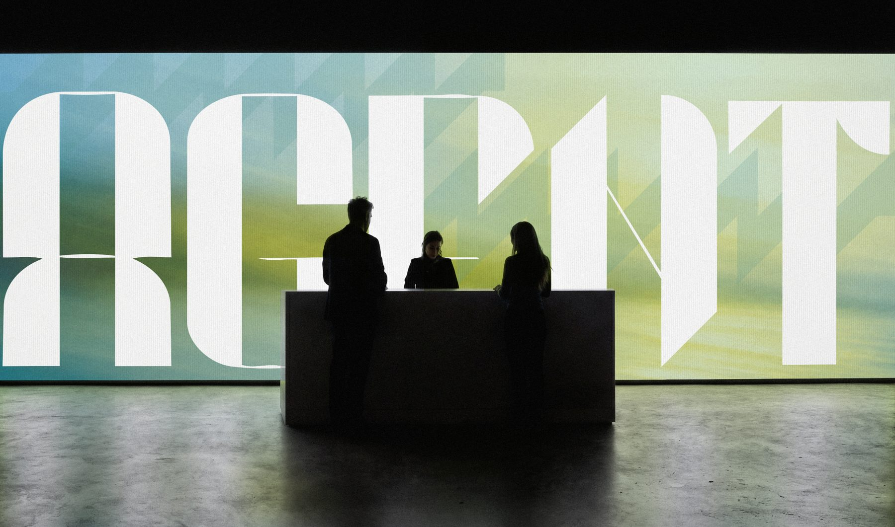
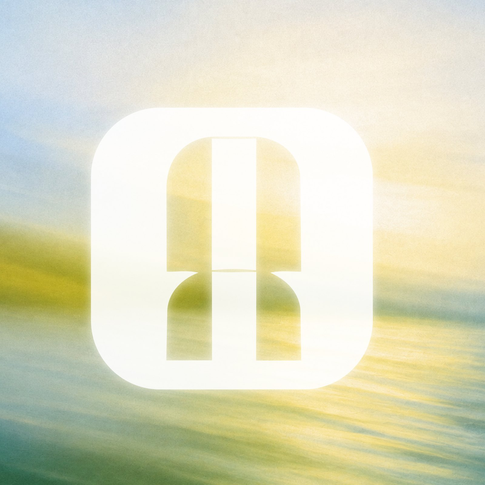
Skills demonstrated
- Type design with a consistent construction logic
- Building an identity system from letterforms
- Pattern, icon, and color system development
- Scaling typography across formats and environments